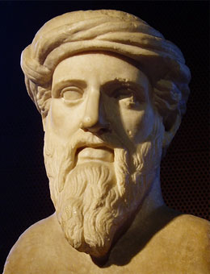

Pythagoras of Samos
Pythagoras of Samos
 Pythagoras was a man of many interests. He loved to figure out how things work which is why he was a philosopher. The word philosopher means “lover of wisdom” and Pythagoras was just that. In fact, Pythagoras was one of the first people to think Earth was not flat but rather a round planet that traveled on an axis around one central point. Originally he said that all planets revolve around Earth but later changed his mind saying that planets revolve around a central fire.
Pythagoras was very interested in numbers and the meaning behind them. He had thought that the number system was based off of numbers 1, 2, 3, 4, and their sum which is ten. He even suggested that even numbers were feminine and odd numbers masculine. The saying “All is Number” came from the Pythagorean school.
Pythagoras explained the number system of 1, 2, 3, 4, 5, 6, and 10 by associating numbers with a concept. They are:
1-Number of Reason
2-First feminine number, number of opinion
3-First male number, number of harmony
4-Number of Justice
5-Number of Marriage
6-Number of Creation
10-Number of the universe, Tetractys or Tetrad